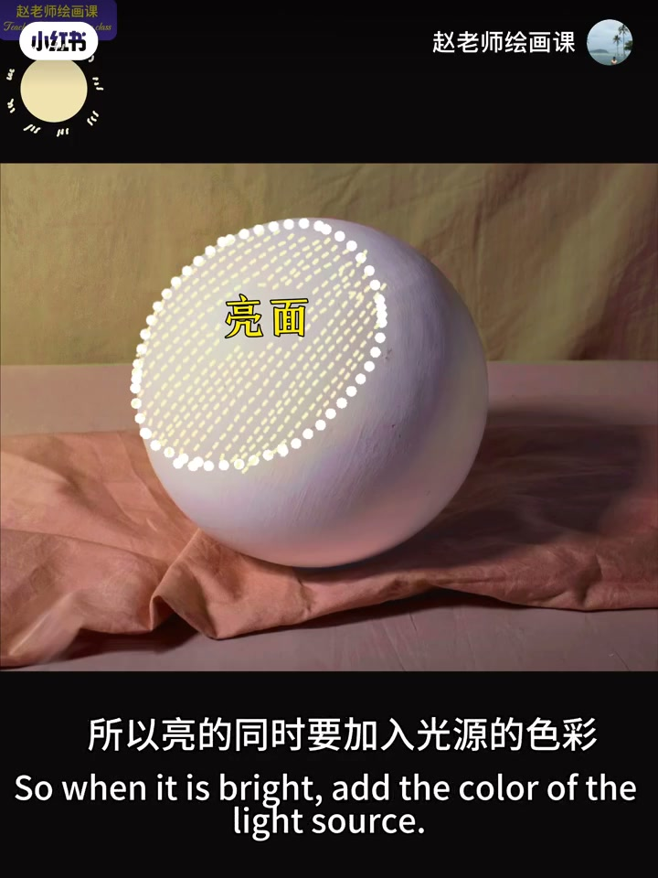
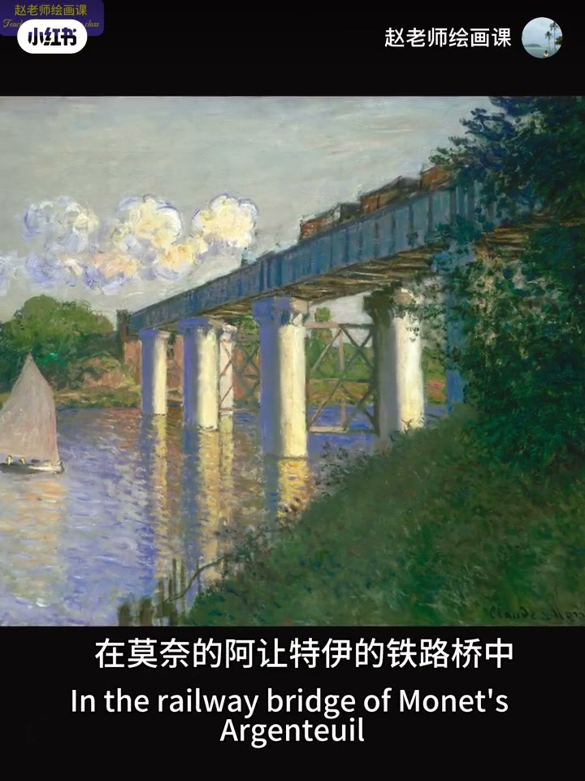
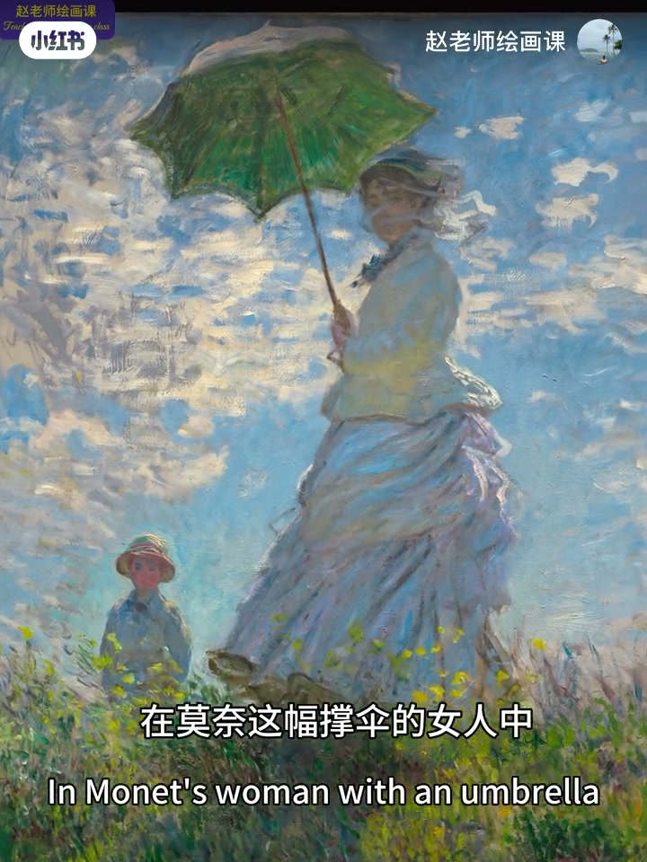
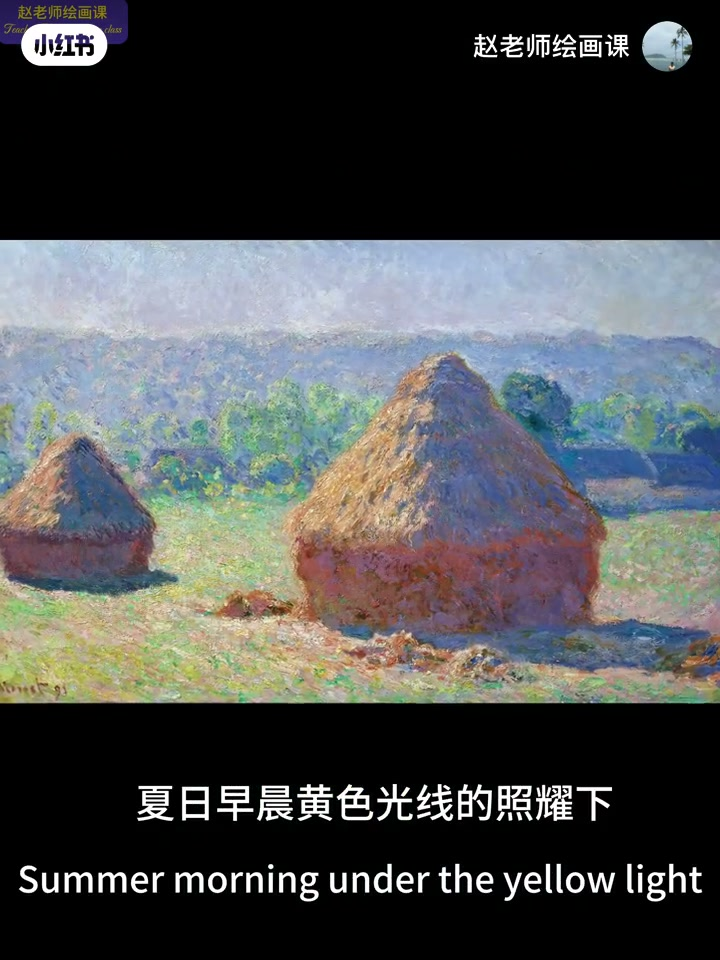
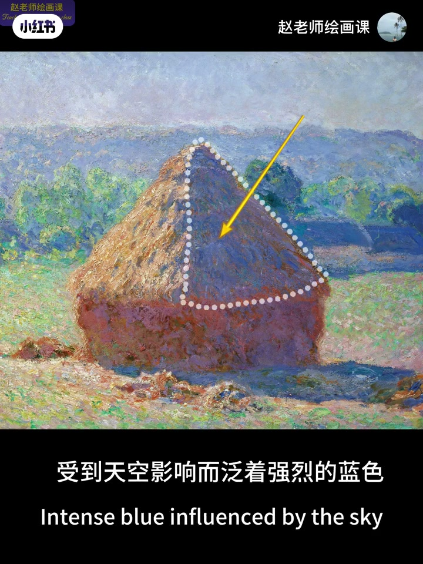
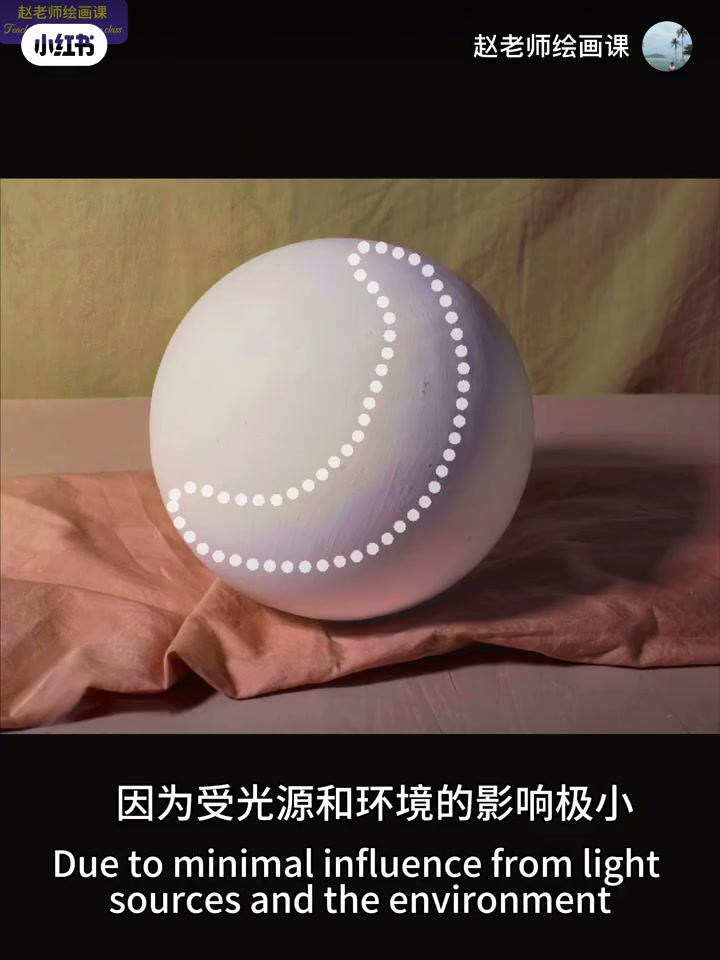

内容要点
干货向第一讲：物体亮灰暗面为何要用不同倾向的色彩。亮部＝光源色＋固有色提亮（莫奈铁路桥、毕沙罗树举证）；暗部因不见直射光，要混环境反射，并因视觉生理再加光线补色（撑伞女人、干草堆）；灰面受光与环境影响极小，基本保留固有色，人像皮肤灰面常偏高饱和。下期预告实战演练。
知识结构
亮部＝光源色＋固有色提亮；白＋暖黄、绿＋黄光→黄绿。
混环境反射；再加光色补色以求心理平衡（红绿后像演示）。
暗部＝固有色变暗＋环境色＋光补色；锥面天空蓝、柱面碎草黄。
影响极小→保固有色；人像皮肤灰面常用较高饱和固有色。
用色彩塑形不是随便换色：亮跟光源走，暗跟环境与补色走，灰守固有色——三层分工清楚，形体才立得住。
00:00-01:02亮部：光源色加固有色提亮
开场抛出困扰：亮灰暗为何要用不同倾向色彩？球体演示：朝向光源的较亮面受光源色影响大，亮的同时要加入光源色彩。公式：亮部色彩＝光源色＋固有色提亮。
举证：莫奈《阿让特伊的铁路桥》中桥端与云固有色为白，亮部＝白＋暖黄光源；毕沙罗河道树亮面＝固有绿＋强烈黄光→明亮黄绿。00:25／00:40 把公式落到可指认画面。


01:02-02:34暗部：环境色＋光的补色
难点在暗部：光完全照不到，受周围反射影响，暗的同时要混合环境色彩。莫奈《撑伞的女人》中胳膊肩膀大腿朝上面受蓝天影响发蓝，小臂向下的面受草地反射显绿。
此外暗部还要考虑加入光线补色——来自眼睛生理：盯红底再看中灰会「看成」绿，反之亦然；面对刺眼亮部光色时，大脑让暗部自动加入光色补色以求平衡。01:20 撑伞女人与后续后像演示是证据链。


02:34-03:14干草堆：把暗部公式画满
总结：暗部＝固有色变暗＋环境色＋光的补色。莫奈干草堆在夏日早晨黄光下，暗部混大量紫色补色；圆柱面受地面碎草黄反射饱和度剧增，略朝天空的锥面泛强烈蓝色。
03:05 黄箭头钉住「天空影响而泛蓝」的锥面暗部。

03:14-03:47灰面：保留固有色
灰面最好理解：受光源与环境影响极小，基本保留物体固有色彩。人像绘画中皮肤灰面往往使用饱和度较高的皮肤固有色。本集是用色彩表现形体第一讲，下期实战演练。
03:20 球上虚线圈出灰面过渡带，对应「影响极小」。

完整转录（80段）
以下文本由 Whisper medium 模型自动转录，可能存在少量识别误差，已尽可能修正。
为什么物体的亮灰暗面要用不同倾向的色彩来画
我们该用哪些颜色来表现形体
这是很多同学困扰的问题
今天的内容比较干
建议喝口水
让我们开始
这是一个环境中的球体
朝向光源的较亮面
很显然它受光源颜色的影响很大
所以亮的同时要加入光源的色彩
因此可以简单得到一个公式
亮部色彩等于光源色加固有色提亮
我们用大师作品举证
莫奈的阿仗特一的铁路桥中
桥端和云的固有色为白色
所以亮部等于白加光源的暖黄色
就是我们现在看到的这个颜色
在毕沙罗的这幅河道树中
树的亮面等于固有的绿加强烈光线的黄色
因此得到了明亮的黄绿色
亮部的色彩很好理解
难点在于暗部
暗部因为光完全照不到
所以会受到周围环境中反射光的影响
因此暗的同时要混合来自环境的色彩
在莫奈这幅撑伞的女人中
胳膊肩膀大腿等朝上的面
受到来自蓝色天空的影响而发蓝
而小臂向下的面受到草地的反射光的影响
显示出明显的绿色
除此之外暗部还要考虑加入光线的补色
这是因为人的眼睛的生理结构导致的
这是很重要的一点
我们来详细解释这个现象
大家试着盯着一块红色放大全屏5秒钟
能感觉到这个圆圈是绿色的同学
举手
同样我们再换一个绿底
能感受到红色吧
实际上我用的都是标准的中灰色
所以在一种颜色的刺激下
我们的大脑迫切需要一个能够平衡它的颜色
因为绿色在色环上距离红色最远
也就是对比最强
故大脑会毫不犹豫的选择绿
所以在面对刺眼的亮部光色时
大脑会让暗部自动加入光色的补色
以求得心理平衡
有没有对我们脆弱的大脑产生一点同情呢
总结一下
暗部的色彩等于固有色变暗
加环境色再加光的补色
在默奈的干草堆中
夏日早晨黄色光线的照耀下
草堆暗部都混合了大量补色
也就是紫色的成分
环境色来说
圆柱面受到地面碎草的黄色
持续反射的影响
饱和度剧增
略微朝向天空的锥面
受到天空影响而犯的强烈的蓝色
补色和环境色与固有色相混合
最终得到了我们看到的效果
最后来说灰面
这个最好理解
因为受光源和环境的影响极小
则基本保留物体固有的色彩
在人像绘画中
皮肤的灰面
往往使用饱和度较高的皮肤固有色
好了
以上就是用色彩表现形体的第一讲
下一期我们实战演练一下
看能否利用这个规律
画出真实又好看的色彩
想要掌握更多的色彩知识
请关注我6月30号的色彩系统课程
下期见了
拜拜